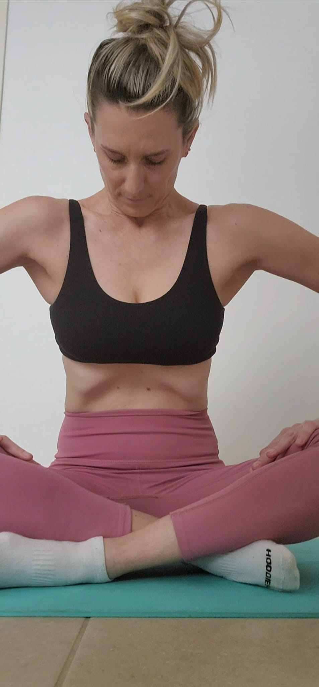

סדנאות היפופרסיב לנשים בחופשת לידה
מסע שיקום עדין אחרי לידה — לחיזוק רצפת האגן, שיקום שרירי הליבה העמוקים, וחיבור מחודש לגוף שעבר שינוי כל כך גדול.
פרטים נוספיםHYPE by Gali Miller
סדנאות היפופרסיב ואימון אישי לנשים שמחפשות חוזק עמוק, נשימה אמיתית, וחיבור מחודש לגוף — במיוחד אחרי לידה.

ארבע דרכים להתחיל את המסע שלכן — בקבוצה, באישי, או בארגון. כל מסלול עוצב בקפידה כדי שתרגישו בנוח מהרגע הראשון.
מסע שיקום עדין אחרי לידה — לחיזוק רצפת האגן, שיקום שרירי הליבה העמוקים, וחיבור מחודש לגוף שעבר שינוי כל כך גדול.
פרטים נוספיםתרגול בקבוצה קטנה לכל אישה שרוצה ללמוד את שיטת ההיפופרסיב לעומק — לחזק את הליבה, לשפר יציבה, ולנשום אחרת.
פרטים נוספיםליווי אחד-על-אחד מותאם בדיוק לכן — לגוף שלכן, לקצב שלכן, ולמטרות שלכן. תרגול שמכבד את מי שאתן באמת.
פרטים נוספיםהרצאות מעמיקות על נשימה, יציבה, ובריאות נשית — לקבוצות נשים, חברות, וארגונים שרוצים להעניק לעצמן יותר.
פרטים נוספיםהיפופרסיב היא שיטה ייחודית של תרגילי נשימה ותנוחה שמפעילה את שרירי הליבה העמוקים שלכן — אלה שלא מגיעים אליהם באימון רגיל. השיטה מתאימה במיוחד לנשים אחרי לידה, אבל מתאימה לכל אישה שרוצה להבין את הגוף שלה לעומק.
תרגול עדין שמשקם ומחזק את רצפת האגן — חיוני אחרי לידה, חשוב לכל אישה.
מפעיל את שרירי הליבה הפנימיים שאחראים על יציבה יציבה, גב בריא, ותחושת ביטחון בגוף.
משחרר מתחים מצטברים, מאריך את הגוף, ומחזיר אותו לתנוחה הטבעית והבריאה שלו.
מלמד אתכן לנשום באמת — כלי שילווה אתכן הרבה מעבר לתרגול בסטודיו.
שמי גלי מילר, מאמנת אישית ומדריכת היפופרסיב.
התחלתי את הדרך הזו אחרי שהבנתי משהו פשוט: הגוף שלנו לא צריך עוד אימון קשה ועוד לחץ — הוא צריך הקשבה אמיתית. שיטת ההיפופרסיב נתנה לי בדיוק את זה, ושינתה את הקשר שלי לגוף שלי מהיסוד.
היום אני מלווה נשים שמחפשות לחזור לגוף שלהן — אחרי לידה, אחרי שנים של ניתוק, או פשוט כי הגיע הזמן.
"אני מאמינה שכל אישה ראויה להרגיש חזקה, מחוברת, ובטוחה בגוף שלה — בלי לחץ, בלי כאב, ובלי השוואות."
"הגעתי אחרי לידה שנייה כשהרגשתי שהגוף שלי כבר לא שלי. גלי החזירה לי את התחושה הזו לאט ובסבלנות — והיום אני בכלל יודעת איך לנשום."
"התרגול עם גלי הוא הזמן היחיד בשבוע שמרגיש כל-כולו שלי. אני יוצאת חזקה, רגועה, וברורה לעצמי."
"חיפשתי הרבה זמן מאמנת שתדבר אליי בגובה העיניים, בלי לחץ ובלי שיפוט. מצאתי אצל גלי בדיוק את זה."
השאירו פרטים ואחזור אליכן בקרוב — או שכתבו לי ישירות בוואטסאפ, מה שנוח לכן יותר.
קיבלתי את הפרטים שלכן ואחזור אליכן בהקדם. אם זה דחוף — בואו בוואטסאפ.
לפעמים שיחה קצרה בוואטסאפ יותר נוחה — אני זמינה ושמחה לענות על כל שאלה, גם אם אתן עדיין מתלבטות.
דברו איתי בוואטסאפשעות פעילות: ימים א'–ה', 09:00–18:00
מיקום: ישראל